naglu 3 month behaviour
Karissa Barthelson
2021-10-26
Last updated: 2022-01-31
Checks: 6 1
Knit directory: MPSIII_zebrafish_Ymaze/
This reproducible R Markdown analysis was created with workflowr (version 1.6.2). The Checks tab describes the reproducibility checks that were applied when the results were created. The Past versions tab lists the development history.
The R Markdown file has unstaged changes. To know which version of the R Markdown file created these results, you’ll want to first commit it to the Git repo. If you’re still working on the analysis, you can ignore this warning. When you’re finished, you can run wflow_publish to commit the R Markdown file and build the HTML.
Great job! The global environment was empty. Objects defined in the global environment can affect the analysis in your R Markdown file in unknown ways. For reproduciblity it’s best to always run the code in an empty environment.
The command set.seed(20211026) was run prior to running the code in the R Markdown file. Setting a seed ensures that any results that rely on randomness, e.g. subsampling or permutations, are reproducible.
Great job! Recording the operating system, R version, and package versions is critical for reproducibility.
Nice! There were no cached chunks for this analysis, so you can be confident that you successfully produced the results during this run.
Great job! Using relative paths to the files within your workflowr project makes it easier to run your code on other machines.
Great! You are using Git for version control. Tracking code development and connecting the code version to the results is critical for reproducibility.
The results in this page were generated with repository version 0d5436b. See the Past versions tab to see a history of the changes made to the R Markdown and HTML files.
Note that you need to be careful to ensure that all relevant files for the analysis have been committed to Git prior to generating the results (you can use wflow_publish or wflow_git_commit). workflowr only checks the R Markdown file, but you know if there are other scripts or data files that it depends on. Below is the status of the Git repository when the results were generated:
Ignored files:
Ignored: .Rapp.history
Ignored: .Rhistory
Ignored: .Rproj.user/
Ignored: data/.DS_Store
Ignored: data/metadata/.DS_Store
Ignored: data/processed_data/.DS_Store
Ignored: data/processed_data/hgsnat/.DS_Store
Ignored: data/processed_data/naglu/.DS_Store
Ignored: data/raw_data/.DS_Store
Ignored: data/raw_data/hgsnat/.DS_Store
Ignored: data/raw_data/hgsnat/3m/.DS_Store
Ignored: data/raw_data/naglu/.DS_Store
Ignored: data/raw_data/sgsh/.DS_Store
Ignored: data/raw_data/sgsh/6m/.DS_Store
Unstaged changes:
Modified: analysis/_site.yml
Modified: analysis/index.Rmd
Modified: analysis/naglu3m.Rmd
Modified: analysis/naglu9m.Rmd
Note that any generated files, e.g. HTML, png, CSS, etc., are not included in this status report because it is ok for generated content to have uncommitted changes.
These are the previous versions of the repository in which changes were made to the R Markdown (analysis/naglu3m.Rmd) and HTML (docs/naglu3m.html) files. If you’ve configured a remote Git repository (see ?wflow_git_remote), click on the hyperlinks in the table below to view the files as they were in that past version.
| File | Version | Author | Date | Message |
|---|---|---|---|---|
| Rmd | 0d5436b | Karissa Barthelson | 2022-01-31 | CLEANUP NAGLU DONE |
| html | 0d5436b | Karissa Barthelson | 2022-01-31 | CLEANUP NAGLU DONE |
| html | 4cba25d | Karissa Barthelson | 2021-11-08 | Build site. |
| html | 6489329 | Karissa Barthelson | 2021-11-08 | Build site. |
| html | a56c0d2 | Karissa Barthelson | 2021-10-27 | Build site. |
| html | 0f9d87a | Karissa Barthelson | 2021-10-26 | Build site. |
| Rmd | 273d442 | Karissa Barthelson | 2021-10-26 | first commit |
| html | 273d442 | Karissa Barthelson | 2021-10-26 | first commit |
setup
library(tidyverse)
library(magrittr)
library(readxl)
library(here)
library(scales)
library(readxl)
library(ggpubr)
library(ggeasy)
library(ggfortify)
library(ggbeeswarm)
library(ggforce)
library(ggrepel)
library(kableExtra)
# stat analysis
library(broom)
library(lme4)
library(performance)
library(car)
library(emmeans)
library(glmmTMB)
library(MASS)
# set the default theme for ggplot as theme_bw
theme_set(theme_bw())
# read in Ewans metadata speadsheet. make all the metadata as factors as well
meta <-
read_excel("data/metadata/naglu 3 month behavioural metadata.xlsx") %>%
mutate(
fish_id = as.factor(fish_id),
Day = as.factor(Day),
Time = as.factor(Time),
Tank = as.factor(Tank),
Sex = as.factor(Sex),
Genotype = factor(Genotype, levels = c("wt", "het", "hom"))
)
# prepare the final data object which contains genotype
final_data <- read_csv("data/processed_data/naglu/3m/final_output.csv") %>%
dplyr::select(-1) %>%
mutate(fish_id = factor(fish_id)) %>%
left_join(meta) %>%
dplyr::filter(Keep == "Y")
# make an object which converts the final data to long format. for easier plotting in ggplot
final_data_long <- final_data %>%
dplyr::filter(Keep == "Y") %>%
gather(key = "tetras", value = "Count", # convert to long format
grep("[L|R]{4}",
colnames(.))
)
# also make an object which sums the tetragrams over the hour
final_data_summedoverbins <- final_data %>%
gather(key = "tetras", value = "Count", # convert to long format
grep("[L|R]{4}", # select the columns which contain a L or a R four times
colnames(.))
) %>%
group_by(fish_id, tetras) %>%
mutate(x = sum(Count)) %>% # sum the tetragram counts per fish_id
dplyr::select(colnames(meta), tetras, x) %>%
uniqueIntroduction
In this analysis, I will analyse Ewans raw data generated for zebrafish arising from a lay from the same naglu A603fs het x het parents in the Zantiks Y-maze.
Briefly, zebrafish are raised from this cross together in the same tank, across 4 lays. Each lay has come from the same parents are approx. 1 week apart in age. Each tank contained fish either WT, heterozygous or homozgous for the mutation in a 1:2:1 ratio. A summary of the fish used in this experiment can be found in the plot below.
meta %>%
group_by(Tank, Genotype) %>%
summarise(n = n()) %>%
ggplot(aes(x = Genotype, y = n, fill = Genotype)) +
geom_col(colour = "black") +
facet_wrap(~Tank) +
scale_fill_viridis_d() +
labs(y = "Number of fish") +
ggtitle("Number of fish per genotype per tank (4 tanks total)")
Fish were isolated for 30 mins two at a time, then placed in the maze for 1 hour. Raw data was collected, and metadata was recorded (i.e. sex, time, day). These raw data spreadsheets were batch processed in the naglu 3m BatchProcess R script to produce the final_data object. This object contains the tetragram frequencies (see below). Note that fish were genotyped after data collection so that we are blinded from any observer bias until after raw data collection. Addiotianlly, the videos were manually observed to ensure proper tracking. Any fish where the tracking was not perfect was omitted.
read_csv("data/raw_data/naglu/3m/Day 1 - 30.6.21/qwer-20210630T014606.csv",
skip =4, col_names = F) %>%
head %>%
dplyr::select(-X2, -X3) %>%
set_colnames(c("Time", "fish",'enter or exit', "zone")) %>%
kable(caption = "example of raw data") %>%
kable_styling(full_width = F)| Time | fish | enter or exit | zone |
|---|---|---|---|
| 000:00:30.551 | 1 | Enter_Zone | 2 |
| 000:00:30.551 | 2 | Enter_Zone | 1 |
| 000:00:30.784 | 2 | Exit_Zone | 1 |
| 000:00:30.784 | 2 | Enter_Zone | 4 |
| 000:00:32.883 | 1 | Exit_Zone | 2 |
| 000:00:32.883 | 1 | Enter_Zone | 4 |
final_data %>%
head %>%
kable(caption = "Example of the processed data") %>%
kable_styling() | fish_id | bin | LLLL | LLLR | LLRL | LLRR | LRLL | LRLR | LRRL | LRRR | RLLL | RLLR | RLRL | RLRR | RRLL | RRLR | RRRL | RRRR | L | R | total_turns | reps | alts | rel_reps | rel_alts | rel_R | rel_L | Day | Time | Sex | Tank | Genotype | Keep | Date |
|---|---|---|---|---|---|---|---|---|---|---|---|---|---|---|---|---|---|---|---|---|---|---|---|---|---|---|---|---|---|---|---|---|---|
| 1 | 1 | 1 | 3 | 3 | 5 | 4 | 6 | 6 | 7 | 4 | 5 | 7 | 8 | 4 | 9 | 7 | 11 | 38 | 55 | 93 | 12 | 13 | 12.903226 | 13.97849 | 59.13978 | 40.86022 | 1 | 10.15 | M | 1 | het | Y | 30.6.21 |
| 1 | 2 | 13 | 4 | 4 | 3 | 3 | 5 | 2 | 5 | 4 | 2 | 5 | 4 | 3 | 4 | 5 | 9 | 41 | 37 | 78 | 22 | 10 | 28.205128 | 12.82051 | 47.43590 | 52.56410 | 1 | 10.15 | M | 1 | het | Y | 30.6.21 |
| 1 | 3 | 2 | 1 | 1 | 1 | 1 | 2 | 3 | 2 | 1 | 1 | 2 | 4 | 1 | 4 | 3 | 3 | 14 | 21 | 35 | 5 | 4 | 14.285714 | 11.42857 | 60.00000 | 40.00000 | 1 | 10.15 | M | 1 | het | Y | 30.6.21 |
| 1 | 4 | 4 | 5 | 6 | 3 | 3 | 5 | 2 | 3 | 5 | 4 | 2 | 3 | 5 | 0 | 3 | 0 | 32 | 24 | 56 | 4 | 7 | 7.142857 | 12.50000 | 42.85714 | 57.14286 | 1 | 10.15 | M | 1 | het | Y | 30.6.21 |
| 1 | 5 | 7 | 4 | 1 | 2 | 1 | 1 | 1 | 2 | 3 | 0 | 1 | 1 | 2 | 1 | 2 | 0 | 21 | 11 | 32 | 7 | 2 | 21.875000 | 6.25000 | 34.37500 | 65.62500 | 1 | 10.15 | M | 1 | het | Y | 30.6.21 |
| 1 | 6 | 0 | 0 | 2 | 2 | 1 | 6 | 5 | 1 | 0 | 3 | 5 | 4 | 2 | 4 | 1 | 0 | 18 | 21 | 39 | 0 | 11 | 0.000000 | 28.20513 | 53.84615 | 46.15385 | 1 | 10.15 | M | 1 | het | Y | 30.6.21 |
check genotype proportions
First, I will check that genotype proportions are as expected. A few less homozygous fish are observed than expected. However, this is partly due to that they were omitted because the software did not track properly.
meta %>%
ggplot(aes(Genotype, fill = Genotype)) +
geom_bar(colour = "black") +
scale_fill_viridis_d() +
ggtitle("Total number of fish per genotype in the study")
Visualisation of raw data
The plots below show the raw counts of each of the possible tetragrams. We can see some fish were quite inactive, wih low total number of tetragrams. The plot below show fish 1-10 for vis purposes.
final_data_summedoverbins %>%
dplyr::filter(fish_id %in% c(seq(1,5))) %>%
ggplot(aes(x = tetras, y = x, fill = tetras)) +
geom_col() +
facet_wrap(~fish_id, ncol = 1) +
labs(y = "Counts of each tetragram",
fill = "Tetragram") +
theme(axis.text.x = element_text(angle = 45, hjust = 1),
legend.position = "none") +
ggtitle("Distribution of memory patterns per fish")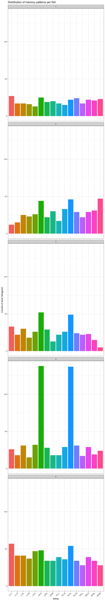
Cleal et al. showed that zebrafish naturally perform more of the alternation tetragrams (LRLR and RLRL) in a Y-maze. This is also obsevred in our data here.
final_data_summedoverbins %>%
ggplot(aes(x = tetras, y = x)) +
geom_jitter(aes(colour = tetras,
shape = Sex)) +
geom_boxplot(outlier.shape = NA,
fill = NA
) +
scale_fill_viridis_d() +
coord_cartesian(ylim = c(0,200)) + # zoom in
labs(y = "Number of tetragrams",
colour = "Tetragram",
x = "Tetragram")+
theme(legend.position = "bottom") +
ggtitle("Total number of 16 possible tetragrams performed by zebrafish in a Y-maze\nduring a 1 hour search period")
| Version | Author | Date |
|---|---|---|
| 273d442 | Karissa Barthelson | 2021-10-26 |
We can also overlay the genotype boxplots as shown below. Looks like the heterozyous and homozygous fish perform more alternations than the WT fish. I will look into this more later in the analysis
final_data_summedoverbins %>%
ggplot(aes(x = tetras, y = x)) +
geom_jitter(aes(colour = tetras,
shape = Sex)) +
geom_boxplot(outlier.shape = NA,
aes(fill = Genotype) # fill the boxplots by genotype
) +
scale_fill_viridis_d() +
coord_cartesian(ylim = c(0,200)) + # zoom in
labs(y = "Number of tetragrams",
colour = "Tetragram",
x = "Tetragram")+
theme(legend.position = "bottom") +
ggtitle("Total number of 16 possible tetragrams performed by zebrafish in a Y-maze\nduring a 1 hour search period")
| Version | Author | Date |
|---|---|---|
| 273d442 | Karissa Barthelson | 2021-10-26 |
The alternation tetragrams are the tetragram of interest (the measure of working memory). Below indicates the number and relative number of tetragrams performed by zebrafish across the 6 x 10 min blocks of the hour they spent in the maze.
ggarrange(
final_data_long %>%
dplyr::distinct(rel_alts, .keep_all = T) %>%
ggplot(aes(x = Genotype, y = alts, fill = Genotype)) +
geom_boxplot(outlier.shape = NA) +
geom_jitter(aes(shape = Sex)) +
facet_wrap(~bin, nrow = 1) +
theme(axis.text.x = element_text(angle = 45, hjust = 1, vjust = 1)) +
ylab("Frequency of alternation tetragrams (LRLR + RLRL)") +
coord_cartesian(ylim = c(0, 100)) + # zoom in
scale_fill_viridis_d() +
ggtitle("Total number of alternaions"),
final_data_long %>%
dplyr::distinct(rel_alts, .keep_all = T) %>%
ggplot(aes(x = Genotype, y = rel_alts, fill = Genotype)) +
geom_boxplot(outlier.shape = NA) +
geom_jitter(aes(shape = Sex)) +
facet_wrap(~bin, nrow = 1) +
ylab("Relative alteration frequency (LRLR + RLRL)") +
theme(axis.text.x = element_text(angle = 45, hjust = 1, vjust = 1)) +
scale_fill_viridis_d() +
ggtitle("Relative number of alternations"),
common.legend = TRUE
)
Locomotor defect
Alteration to locomotor activity could be a confounding effect with genotype to alternation (LRLR + RLRL) frequency. If the mutant fish had some form of locomotor change, they could be performing more or less alternation tetragrams not due to impairment of spatial working memory. To account for this, I will test whether the genotype of the fish had a significant effect on 1) the total number of turns the fish performed in the hour spent in the maze or 2) the average time spent in each zone of the maze. Statistical evidence is found for fish in Tank 4 being more active.
total number of turns
final_data_summedoverbins %>%
ungroup() %>%
group_by(fish_id) %>%
mutate(total_turns = sum(x)) %>%
dplyr::select(colnames(meta), total_turns) %>%
unique %>%
ggplot(aes(x = Genotype,y = total_turns)) +
geom_violin(aes(fill = Genotype),
alpha = 0.5) +
geom_boxplot(aes(colour = Genotype),
fill = NA,
outlier.shape = NA,
width = 0.25,
colour= "black") +
geom_label_repel(aes(label = paste0("fish " , fish_id)),
fill = NA,
nudge_x = 0.5,
data = . %>% dplyr::filter(total_turns > 1100)) +
geom_quasirandom(aes(shape = Sex)) +
scale_fill_viridis_d(option = "viridis") +
scale_colour_viridis_d(option = "viridis") +
ylab("Total number of turns") +
ggtitle("Total number of turns performed by fish in the Y-maze in 1 hour")
Inspection of the graph above showing the total number of turns performed by zebrafish in a 1 hour in the Y-maze indicates that fish 56 is probs an outlier. So I will omit it from the rest of the analysis.
# omit fish 56 from rest of analysis.
final_data %<>%
dplyr::filter(fish_id != "56")
final_data_long %<>%
dplyr::filter(fish_id != "56")
final_data_summedoverbins %<>%
dplyr::filter(fish_id != "56")Another look at the total number of turns performed by fish by genotype now looks much better.
final_data_summedoverbins %>%
ungroup() %>%
group_by(fish_id) %>%
mutate(total_turns = sum(x)) %>%
dplyr::select(colnames(meta), total_turns) %>%
unique %>%
ggplot(aes(x = Genotype,y = total_turns)) +
geom_violin(aes(fill = Genotype),
alpha = 0.5) +
geom_boxplot(aes(colour = Genotype),
fill = NA,
outlier.shape = NA,
width = 0.25,
colour= "black") +
geom_quasirandom(aes(shape = Sex)) +
scale_fill_viridis_d(option = "viridis") +
scale_colour_viridis_d(option = "viridis") +
ylab("Total number of turns") +
ggtitle("Total number of turns performed by fish in the Y-maze in 1 hour")
I also want to check whether the home tank makes an overall difference to total number of turns. It apparently does…
final_data_summedoverbins %>%
ungroup() %>%
group_by(fish_id) %>%
mutate(total_turns = sum(x)) %>%
dplyr::select(colnames(meta), total_turns) %>%
unique %>%
ggplot(aes(x = Tank, y = total_turns)) +
geom_violin(aes(fill = Tank),
alpha = 0.5) +
geom_boxplot(aes(colour = Tank),
fill = NA,
outlier.shape = NA,
width = 0.25,
colour= "black") +
geom_quasirandom(aes(shape = Genotype)) +
scale_fill_viridis_d(option = "viridis") +
scale_colour_viridis_d(option = "viridis") +
ylab("Total number of turns") +
ggtitle("Total number of turns performed by fish in the Y-maze in 1 hour",
subtitle = "Fish in Tank 4 appear to be more active")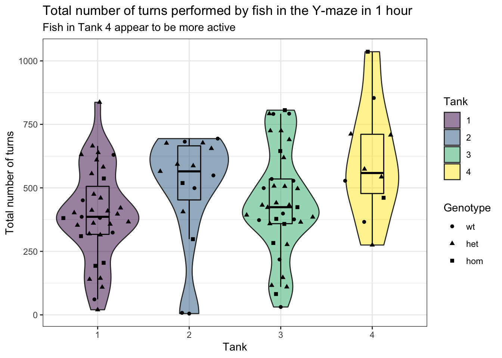
final_data_summedoverbins %>%
ungroup() %>%
group_by(fish_id) %>%
mutate(total_turns = sum(x)) %>%
dplyr::select(colnames(meta), total_turns) %>%
unique %>%
dplyr::filter(total_turns < 1200) %>% # omit the outliers
glm.nb(total_turns ~ Genotype + Sex + Tank,
data = .) %>%
summary %>%
.$coef %>%
kable(caption = "Negative binomial GLM model coefficients.
Tank 4 has a significant effect on the total number of turns" ) %>%
kable_styling()| Estimate | Std. Error | z value | Pr(>|z|) | |
|---|---|---|---|---|
| (Intercept) | 5.8317448 | 0.1655198 | 35.2329201 | 0.0000000 |
| Genotypehet | 0.0893291 | 0.1501311 | 0.5950071 | 0.5518387 |
| Genotypehom | -0.0320198 | 0.1975785 | -0.1620612 | 0.8712576 |
| SexM | 0.1757271 | 0.1298983 | 1.3528055 | 0.1761178 |
| Tank2 | 0.1914271 | 0.1931177 | 0.9912458 | 0.3215656 |
| Tank3 | 0.1627255 | 0.1456119 | 1.1175290 | 0.2637682 |
| Tank4 | 0.4940779 | 0.2227545 | 2.2180383 | 0.0265522 |
I next want to look at the activity of zebrafish across the time bins.
final_data %>%
dplyr::select(colnames(meta), bin, total_turns) %>%
ggplot(aes(x = Genotype, y = total_turns)) +
geom_violin(aes(fill = Genotype),
alpha = 0.5) +
facet_wrap(~bin, nrow = 1) +
geom_boxplot(aes(colour = Genotype),
fill = NA,
outlier.shape = NA,
width = 0.25,
colour= "black") +
geom_label_repel(aes(label = paste0("fish " , fish_id)),
fill = NA,
nudge_x = -0.5,
data = . %>% dplyr::filter(total_turns > 300)) +
geom_quasirandom(aes(shape = Genotype)) +
scale_fill_viridis_d(option = "viridis") +
scale_colour_viridis_d(option = "viridis") +
ylab("Total number of turns") +
theme(legend.position = "top") +
ggtitle("Total number of turns performed by fish in the Y-maze in 1 hour")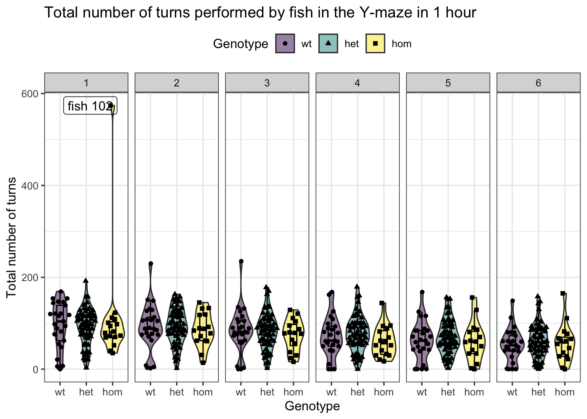
Inspection of this plot indicates that fish 102 probs had some problems in the tracking. Checking the video confrimed the tracking went haywire. So this fish is also omitted from the remainder of the analysis.
# omit fish 56 from rest of analysis.
final_data %<>%
dplyr::filter(fish_id != "102")
final_data_long %<>%
dplyr::filter(fish_id != "102")
final_data_summedoverbins %<>%
dplyr::filter(fish_id != "102")time spent in each zone of the Y-maze
read_csv("data/processed_data/naglu/3m/time_in_zone.csv") %>%
mutate(fish_id = as.character(fish_id)) %>%
dplyr::select(fish_id, bin, zone, time_in_zone) %>%
left_join(meta) %>%
# omit the problematic fish
dplyr::filter(Keep == "Y") %>%
dplyr::filter(fish_id != "102") %>%
dplyr::filter(fish_id != "56") %>%
group_by(fish_id, zone) %>%
mutate(total_timeInZone = sum(time_in_zone)) %>%
dplyr::distinct(total_timeInZone, .keep_all = TRUE) %>%
ggplot(aes(x = Genotype, y = total_timeInZone/60)) +
geom_quasirandom(aes(shape = Sex)
) +
geom_boxplot(aes(fill = Genotype),
outlier.shape = NA,
alpha = 0.5) +
facet_wrap(~zone, nrow = 1) +
scale_y_log10() +
ylab("Total time spent in each zone (mins, log scale)") +
scale_fill_viridis_d() +
ggtitle("Total time spent in each zone") 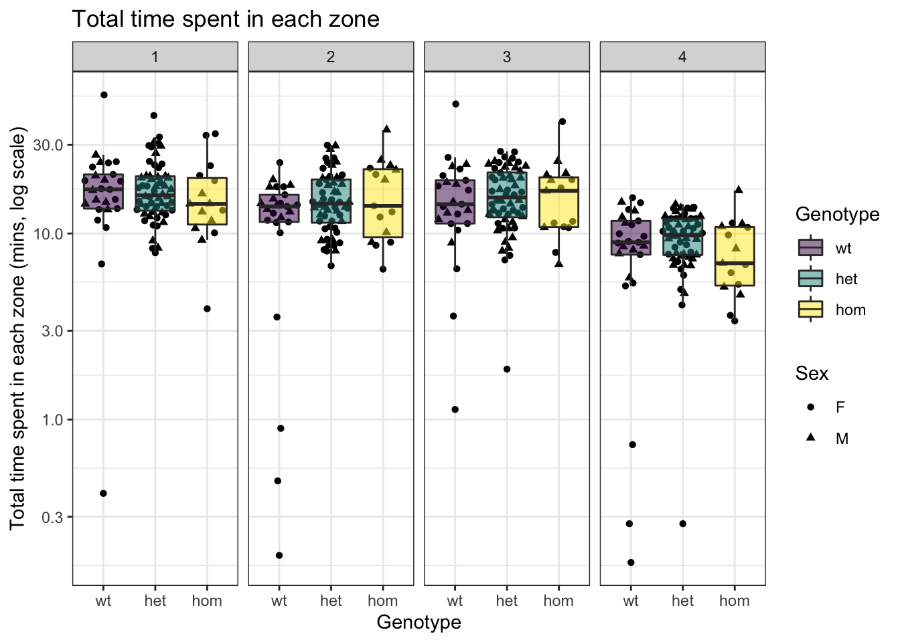
| Version | Author | Date |
|---|---|---|
| 0d5436b | Karissa Barthelson | 2022-01-31 |
read_csv("data/processed_data/naglu/3m/time_in_zone.csv") %>%
mutate(fish_id = as.character(fish_id)) %>%
dplyr::select(fish_id, bin, zone, time_in_zone) %>%
left_join(meta) %>%
dplyr::filter(Keep == "Y") %>%
dplyr::filter(fish_id != "102") %>%
dplyr::filter(fish_id != "56") %>%
group_by(fish_id, zone) %>%
mutate(aveTimeInZone = mean(time_in_zone)) %>%
dplyr::distinct(aveTimeInZone, .keep_all = TRUE) %>%
ggplot(aes(x = Genotype, y = aveTimeInZone)) +
geom_quasirandom(aes(shape=Sex)
) +
geom_boxplot(aes(fill = Genotype),
outlier.shape = NA,
alpha = 0.5) +
facet_wrap(~zone, nrow = 1) +
scale_fill_viridis_d() +
scale_y_log10() +
ylab("Average time spent in each zone (seconds, log scale") +
ggtitle("Average time spent in each zone")
| Version | Author | Date |
|---|---|---|
| 0d5436b | Karissa Barthelson | 2022-01-31 |
read_csv("data/processed_data/naglu/3m/time_in_zone.csv") %>%
mutate(fish_id = as.character(fish_id)) %>%
dplyr::select(fish_id, bin, zone, time_in_zone) %>%
left_join(meta) %>%
dplyr::filter(Keep == "Y") %>%
dplyr::filter(fish_id != "102") %>%
dplyr::filter(fish_id != "56") %>%
group_by(fish_id, zone) %>%
mutate(aveTimeInZone = mean(time_in_zone)) %>%
dplyr::distinct(aveTimeInZone, .keep_all = TRUE) %>%
ggplot(aes(x = Tank, y = aveTimeInZone)) +
geom_quasirandom(aes(shape=Genotype)
) +
geom_boxplot(aes(fill = Tank),
outlier.shape = NA,
alpha = 0.5) +
facet_wrap(~zone, nrow = 1) +
scale_fill_viridis_d() +
scale_y_log10() +
ylab("Average time spent in each zone (seconds, log scale") +
ggtitle("Average time spent in each zone")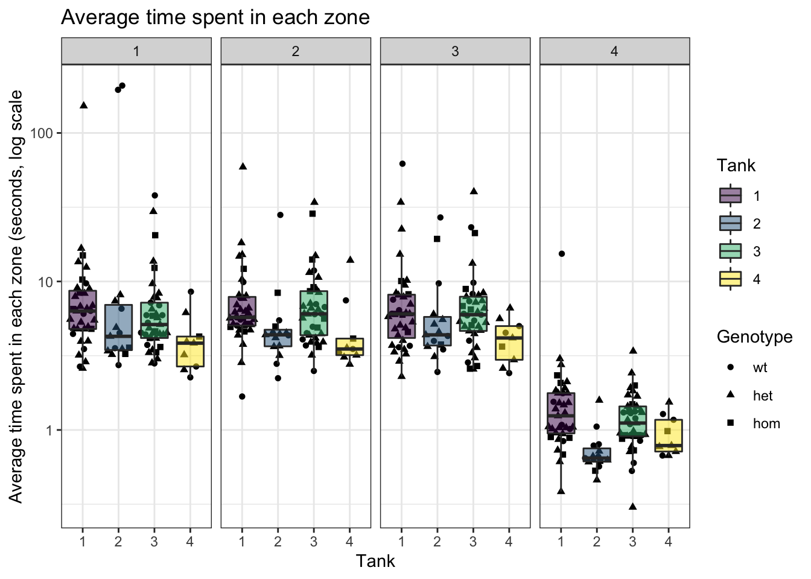
| Version | Author | Date |
|---|---|---|
| 0d5436b | Karissa Barthelson | 2022-01-31 |
read_csv("data/processed_data/naglu/3m/time_in_zone.csv") %>%
mutate(fish_id = as.character(fish_id)) %>%
dplyr::select(fish_id, bin, zone, time_in_zone) %>%
left_join(meta) %>%
dplyr::filter(Keep == "Y") %>%
dplyr::filter(fish_id != "102") %>%
dplyr::filter(fish_id != "56") %>%
group_by(fish_id, zone) %>%
mutate(aveTimeInZone = mean(time_in_zone)) %>%
dplyr::distinct(aveTimeInZone, .keep_all = TRUE) %>%
lm(log(aveTimeInZone) ~ (Genotype + zone)^2 + Sex + Tank,
data = .) %>%
summary %>%
.$coef %>%
kable(caption = "linear model: log(average time in zone) ~ (Genotype + zone)^2 + Sex + Tank") %>%
kable_styling() %>%
row_spec(row = c(2,3,9,10), bold = T, color = "black", background = "lightblue") %>%
row_spec(row = c(6,8), bold = T, color = "black", background = "salmon")| Estimate | Std. Error | t value | Pr(>|t|) | |
|---|---|---|---|---|
| (Intercept) | 2.9101339 | 0.2058899 | 14.1344171 | 0.0000000 |
| Genotypehet | -0.1244665 | 0.2325418 | -0.5352439 | 0.5927994 |
| Genotypehom | 0.0214374 | 0.3150325 | 0.0680482 | 0.9457836 |
| zone | -0.5378023 | 0.0703275 | -7.6471150 | 0.0000000 |
| SexM | -0.0919540 | 0.0849123 | -1.0829282 | 0.2795380 |
| Tank2 | -0.2722608 | 0.1245054 | -2.1867383 | 0.0293806 |
| Tank3 | -0.1072029 | 0.0938364 | -1.1424444 | 0.2540002 |
| Tank4 | -0.5119161 | 0.1507688 | -3.3953725 | 0.0007588 |
| Genotypehet:zone | 0.0313167 | 0.0845811 | 0.3702566 | 0.7114009 |
| Genotypehom:zone | -0.0049783 | 0.1148443 | -0.0433482 | 0.9654471 |
check for handedness
Fontana et al. 2019 showed that fish sometimes show a behavioral lateralisation (i.e. handedness). If fish show this, then they would perform less alternation tetragrams not due to working memory. Here, we defne zebrafish as showing a laterality if they perform left or right turns more than 60% of the total turns. Indeed, some zebrafish show a preference for L or R turns. However, it is not significantly to be related to genotype.
# make the LR bias object
LR_Bias <- final_data %>%
dplyr::select(L, R, total_turns, fish_id) %>%
group_by(fish_id) %>%
mutate(L = sum(L),
R = sum(R),
total_turns = sum(total_turns),
L_R_bias = case_when( #consider more than 60% of the time performing a left or right turn to be a bias
L/total_turns > 0.6 ~ "Left",
R/total_turns > 0.6 ~ "Right",
TRUE ~ "Neither"
)) %>%
dplyr::select(fish_id, L_R_bias) %>%
unique() %>%
mutate(L_R_bias = factor(L_R_bias,
levels = c("Neither", "Left", "Right"))
)
final_data %>%
left_join(LR_Bias) %>%
group_by(fish_id) %>%
mutate(L = sum(L),
R = sum(R),
total_turns = sum(total_turns)
) %>%
ggplot(aes(L, R, shape = Genotype)) +
geom_point(aes(colour = L_R_bias),
size = 3) +
geom_abline(slope = 1) +
scale_color_manual(values = c(viridis_pal(end=0.75)(3),
rep("black", 3))
)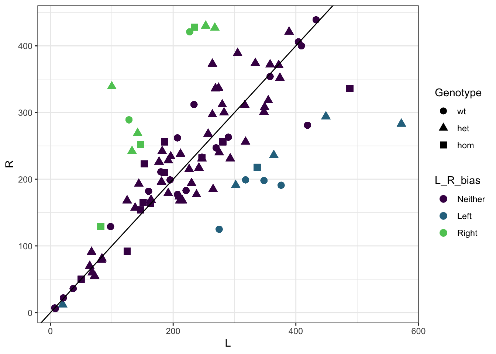
| Version | Author | Date |
|---|---|---|
| 0d5436b | Karissa Barthelson | 2022-01-31 |
LR_Bias %>%
left_join(meta) %>%
ungroup() %>%
group_by(Genotype, L_R_bias) %>%
dplyr::select(L_R_bias, Genotype) %>%
summarise(n = n()) %>%
spread(key = "Genotype", value = "n") %>%
column_to_rownames("L_R_bias") %>%
chisq.test() %>%
tidy() %>%
mutate(p.value = signif(p.value, 2),
statistic = signif(statistic, 2)
) %>%
kable(caption = "Chi-square test of Genotype ~ LR Bias") %>%
kable_styling(full_width = F)| statistic | p.value | parameter | method |
|---|---|---|---|
| 2.8 | 0.59 | 4 | Pearson’s Chi-squared test |
test for changes to alternation
Finally, I will now test for alternation changes using a generlatised linear mixed effect model (beta-binomial distribution). We use this because it is count data which is over-dispersed, and fixed and random effects are included. The link function is logit.
glm <-
final_data %>%
droplevels() %>%
left_join(LR_Bias) %>%
mutate(
dayTime = interaction(Day, Time, drop = T),
non_alts = total_turns - alts,
bin = as.factor(bin)
) %>%
glmmTMB(
cbind(alts, non_alts) ~ (bin + Genotype)^2 + Time + Sex + Tank + L_R_bias + (1|Day) + (1|fish_id) + (1|dayTime),
family = betabinomial(),
data = .
)
an <- Anova(glm) %>%
as.data.frame()
an %>%
dplyr::rename(pval = `Pr(>Chisq)`) %>%
kable(caption = "GLM coefs ") %>%
kable_styling() %>%
row_spec(row = c(2,7), bold = T, color = "black", background = "lightblue")| Chisq | Df | pval | |
|---|---|---|---|
| bin | 9.3864778 | 5 | 0.0946068 |
| Genotype | 5.5153035 | 2 | 0.0634406 |
| Time | 13.9381753 | 13 | 0.3782124 |
| Sex | 0.1268834 | 1 | 0.7216856 |
| Tank | 7.1449444 | 3 | 0.0674186 |
| L_R_bias | 14.3339236 | 2 | 0.0007717 |
| bin:Genotype | 5.1134790 | 10 | 0.8834696 |
Genotype
The effect of genotype does not quite reach the threshold for statistcial significance (p < 0.05). However, there is a clear trend of increasing lternations in the heterozygous and homozygous genotypes.
summary(emmeans(glm, specs = "Genotype"), type = "response") %>%
as_tibble() %>%
mutate(Genotype = case_when(Genotype == "wt" ~ "+/+",
Genotype == "het" ~ "A603fs/+",
Genotype == "hom" ~ "A603fs/A603fs")) %>%
ggplot(aes(Genotype, prob, colour = Genotype)) +
geom_point(size = 5,
position = position_dodge(width = 0.5)) +
geom_errorbar(aes(ymin = lower.CL, ymax = upper.CL),
width = 0.25,
size = 1,
position = position_dodge(width = 0.5)) +
labs(y = "Estimated probability of alternation",
x = "Time interval") +
theme(axis.text.x = element_text(hjust = 1,
vjust = 1,
angle = 45)) +
scale_color_viridis_d(end = 0.8, option = "inferno") +
ggtitle("GLM predicted probability of zebrafish performing an alternation\ntetragram at 3 months of age",
subtitle = paste0("Effect of Genotype from GLM: ",
signif(an["Genotype","Pr(>Chisq)"], digits = 2)
)
)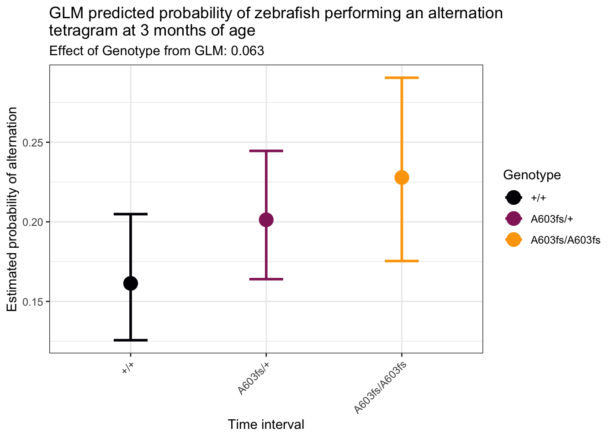
| Version | Author | Date |
|---|---|---|
| 0d5436b | Karissa Barthelson | 2022-01-31 |
bin by genotype
While there appears to be a bit of differences between the genotypes. The effect is not significant overall. I think this may be partially driven by the increased number of degrees of freedom in this effect, and the mostly overlapping condifence intervals errorbars.
summary(emmeans(glm, specs = "bin", by = "Genotype"), type = "response") %>%
as_tibble() %>%
mutate(timeinterval = case_when(
bin == 1 ~ "0_10",
bin == 2 ~ "10_20",
bin == 3 ~ "20_30",
bin == 4 ~ "30_40",
bin == 5 ~ "40_50",
bin == 6 ~ "50_60"
)) %>%
ggplot(aes(timeinterval, prob, colour = Genotype, group = Genotype)) +
geom_point(size = 2,
position = position_dodge(width = 0.5)) +
geom_line(position = position_dodge(width = 0.5)) +
geom_errorbar(
aes(ymin = lower.CL, ymax = upper.CL),
width = 0.5,
position = position_dodge(width = 0.5)
) +
scale_y_continuous(limits = c(0, 0.4)) +
ylab("Estimated probability of \nalternation") +
xlab("Time interval") +
theme(
axis.text.x = element_text(hjust = 1,
vjust = 1,
angle = 45)
) +
scale_color_viridis_d(end = 0.8, option = "inferno") +
ggtitle("GLM predicted probability of zebrafish performing an alternation\ntetragram across the 6x10 min bins",
subtitle = paste0("Effect of bin:Genotype from GLM: ",
signif(an["bin:Genotype","Pr(>Chisq)"], digits = 2)
)
)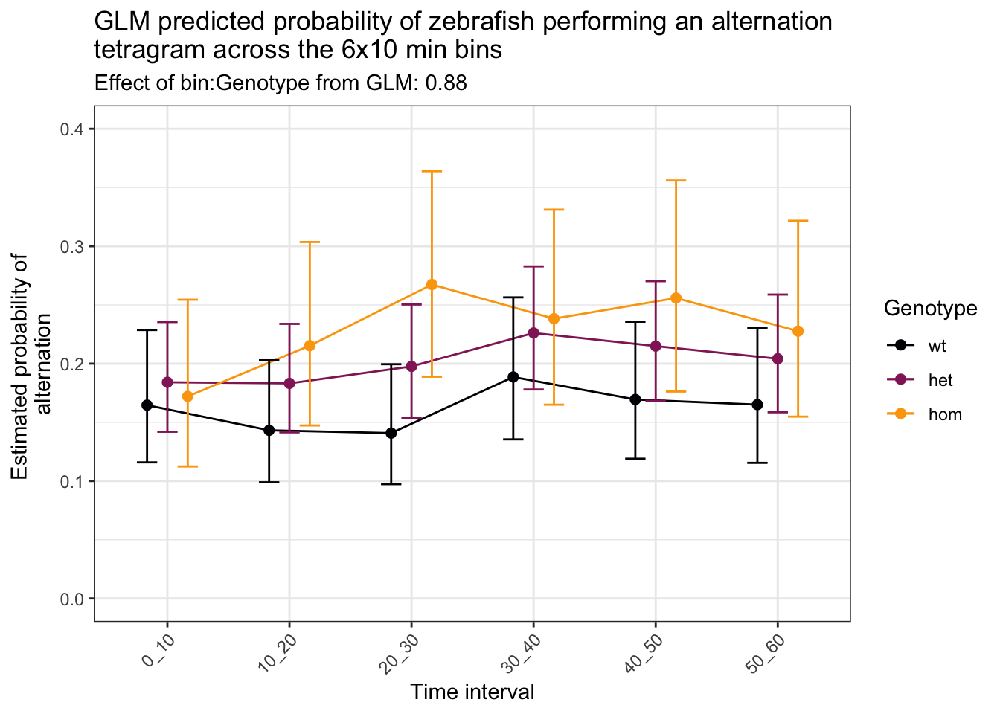
| Version | Author | Date |
|---|---|---|
| 0d5436b | Karissa Barthelson | 2022-01-31 |
Time of day
The time of day that the fish went into the maze has a variable effect on the number of alternations, and is not statistically significant.
summary(emmeans(glm, specs = "Time"), type = "response") %>%
as_tibble() %>%
ggplot(aes(Time, prob, colour = Time)) +
geom_point(size = 5,
position = position_dodge(width = 0.5)) +
geom_errorbar(
aes(ymin = lower.CL, ymax = upper.CL),
width = 0.25,
size = 1,
position = position_dodge(width = 0.25)
) +
ylab("Estimated probability of alternation") +
xlab("Time of day") +
theme(
axis.text.x = element_text(hjust = 1,
vjust = 1,
angle = 45),
legend.position = "none"
) +
scale_color_viridis_d(end = 0.8, option = "viridis") +
ggtitle("GLM predicted probability of zebrafish performing an alternation\ntetragram due to time of day",
subtitle = paste0("Effect of time from GLM: ",
signif(an["Time","Pr(>Chisq)"], digits = 2)
)
)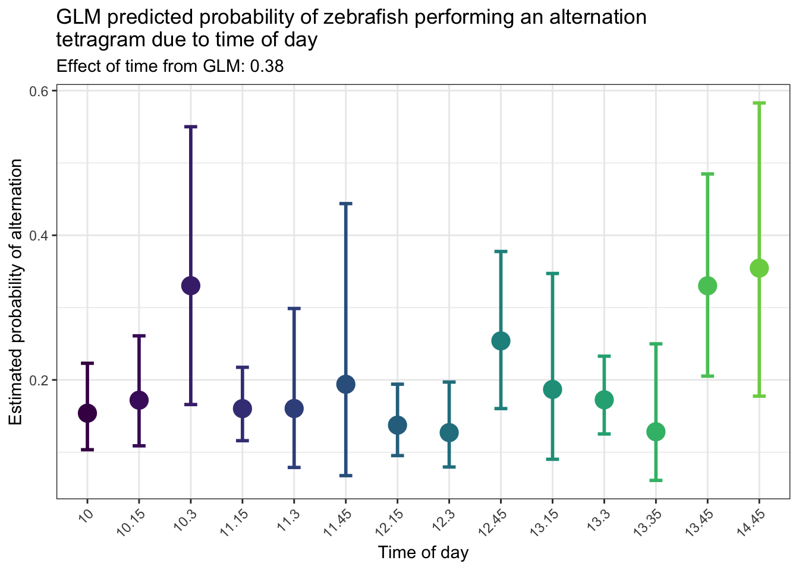
| Version | Author | Date |
|---|---|---|
| 0d5436b | Karissa Barthelson | 2022-01-31 |
L_R_bias
There is a clear effect of whether the fish have a left or right turn bias on the number of alternations it performs.
summary(emmeans(glm, specs = "L_R_bias"), type = "response") %>%
as_tibble() %>%
ggplot(aes(L_R_bias, prob, colour = L_R_bias)) +
geom_point(size = 5,
position = position_dodge(width = 0.5)) +
geom_errorbar(
aes(ymin = lower.CL, ymax = upper.CL),
width = 0.25,
size = 1,
position = position_dodge(width = 0.25)
) +
ylab("Estimated probability of alternation") +
xlab("Time of day") +
theme(
axis.text.x = element_text(hjust = 1,
vjust = 1,
angle = 45),
legend.position = "none"
) +
scale_color_viridis_d(end = 0.8, option = "viridis") +
ggtitle("GLM predicted probability of zebrafish performing an alternation\ntetragram due to having a L or R bias",
subtitle = paste0("Effect of L_R_bias from GLM: ",
signif(an["L_R_bias","Pr(>Chisq)"], digits = 2)
)
)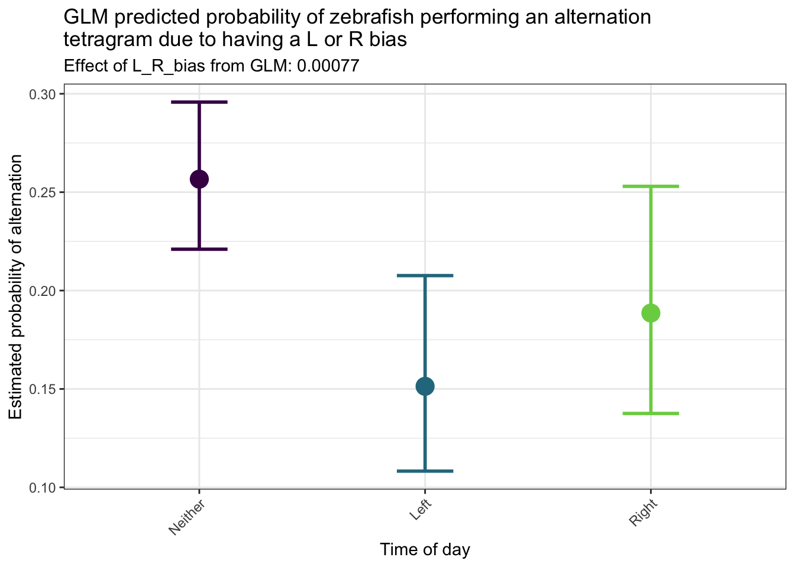
| Version | Author | Date |
|---|---|---|
| 0d5436b | Karissa Barthelson | 2022-01-31 |
Sex
Sex does not have an effect on how many alternations the fish perform.
summary(emmeans(glm, specs = "Sex"), type = "response") %>%
as_tibble() %>%
ggplot(aes(Sex, prob, colour = Sex)) +
geom_point(size = 5,
position = position_dodge(width = 0.5)) +
geom_errorbar(
aes(ymin = lower.CL, ymax = upper.CL),
width = 0.25,
size = 1,
position = position_dodge(width = 0.25)
) +
ylab("Estimated probability of alternation") +
xlab("Time of day") +
theme(
axis.text.x = element_text(hjust = 1,
vjust = 1,
angle = 45),
legend.position = "none"
) +
scale_color_viridis_d(end = 0.8, option = "viridis") +
ggtitle("GLM predicted probability of zebrafish performing an alternation\ntetragram due to sex",
subtitle = paste0("Effect of Sex from GLM: ",
signif(an["Sex","Pr(>Chisq)"], digits = 2)
)
)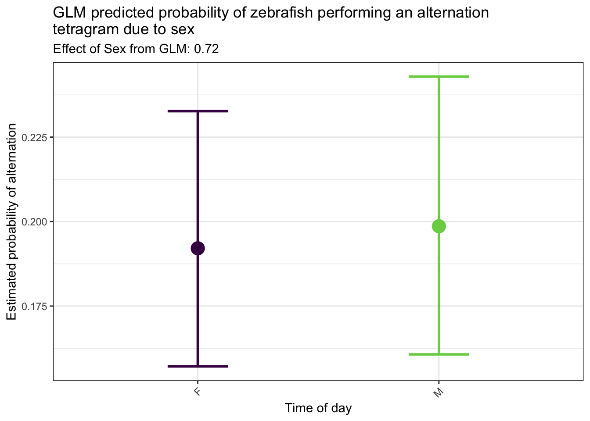
| Version | Author | Date |
|---|---|---|
| 0d5436b | Karissa Barthelson | 2022-01-31 |
Conclusion
3 month old zebrafish homozygous for the naglu A603fs mutation perform more alternations than their wild type siblings. This is indicative of improved spatial working memory. Perhaps we are picking up a hyperactivity phenotype consistent with the observed behaviour of human children living with this disease.
# export data
saveRDS(glm, "data/R objects/naglu3m.rds")
sessionInfo()R version 4.0.2 (2020-06-22)
Platform: x86_64-apple-darwin17.0 (64-bit)
Running under: macOS Mojave 10.14.3
Matrix products: default
BLAS: /Library/Frameworks/R.framework/Versions/4.0/Resources/lib/libRblas.dylib
LAPACK: /Library/Frameworks/R.framework/Versions/4.0/Resources/lib/libRlapack.dylib
locale:
[1] en_AU.UTF-8/en_AU.UTF-8/en_AU.UTF-8/C/en_AU.UTF-8/en_AU.UTF-8
attached base packages:
[1] stats graphics grDevices utils datasets methods base
other attached packages:
[1] MASS_7.3-54 glmmTMB_1.1.1 emmeans_1.6.1 car_3.0-11
[5] carData_3.0-4 performance_0.7.2 lme4_1.1-27.1 Matrix_1.3-4
[9] broom_0.7.8 kableExtra_1.3.4 ggrepel_0.9.1 ggforce_0.3.3
[13] ggbeeswarm_0.6.0 ggfortify_0.4.12 ggeasy_0.1.3 ggpubr_0.4.0
[17] scales_1.1.1 here_1.0.1 readxl_1.3.1 magrittr_2.0.1
[21] forcats_0.5.1 stringr_1.4.0 dplyr_1.0.7 purrr_0.3.4
[25] readr_1.4.0 tidyr_1.1.3 tibble_3.1.2 ggplot2_3.3.5
[29] tidyverse_1.3.1 workflowr_1.6.2
loaded via a namespace (and not attached):
[1] TH.data_1.0-10 minqa_1.2.4 colorspace_2.0-2
[4] ggsignif_0.6.2 ellipsis_0.3.2 rio_0.5.27
[7] rprojroot_2.0.2 estimability_1.3 fs_1.5.0
[10] rstudioapi_0.13 farver_2.1.0 fansi_0.5.0
[13] mvtnorm_1.1-2 lubridate_1.7.10 xml2_1.3.2
[16] codetools_0.2-18 splines_4.0.2 knitr_1.33
[19] polyclip_1.10-0 jsonlite_1.7.2 nloptr_1.2.2.2
[22] dbplyr_2.1.1 compiler_4.0.2 httr_1.4.2
[25] backports_1.2.1 assertthat_0.2.1 cli_3.0.0
[28] later_1.2.0 tweenr_1.0.2 htmltools_0.5.1.1
[31] tools_4.0.2 coda_0.19-4 gtable_0.3.0
[34] glue_1.4.2 Rcpp_1.0.7 cellranger_1.1.0
[37] jquerylib_0.1.4 vctrs_0.3.8 svglite_2.0.0
[40] nlme_3.1-152 insight_0.14.2 xfun_0.24
[43] openxlsx_4.2.4 rvest_1.0.0 lifecycle_1.0.0
[46] rstatix_0.7.0 zoo_1.8-9 hms_1.1.0
[49] promises_1.2.0.1 sandwich_3.0-1 TMB_1.7.20
[52] yaml_2.2.1 curl_4.3.2 gridExtra_2.3
[55] sass_0.4.0 stringi_1.6.2 highr_0.9
[58] boot_1.3-28 zip_2.2.0 rlang_0.4.11
[61] pkgconfig_2.0.3 systemfonts_1.0.2 evaluate_0.14
[64] lattice_0.20-44 labeling_0.4.2 cowplot_1.1.1
[67] tidyselect_1.1.1 plyr_1.8.6 R6_2.5.0
[70] generics_0.1.0 multcomp_1.4-17 DBI_1.1.1
[73] pillar_1.6.1 haven_2.4.1 whisker_0.4
[76] foreign_0.8-81 withr_2.4.2 survival_3.2-11
[79] abind_1.4-5 modelr_0.1.8 crayon_1.4.1
[82] utf8_1.2.1 rmarkdown_2.9 grid_4.0.2
[85] data.table_1.14.0 git2r_0.28.0 reprex_2.0.0
[88] digest_0.6.27 webshot_0.5.2 xtable_1.8-4
[91] numDeriv_2016.8-1.1 httpuv_1.6.1 munsell_0.5.0
[94] beeswarm_0.4.0 viridisLite_0.4.0 vipor_0.4.5
[97] bslib_0.2.5.1